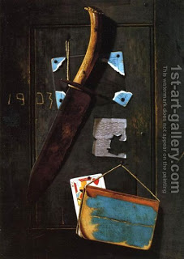

Bava Kamma 91 - Assessment of Weapons
" If two men fight together, and one strikes the other with a stone or a fist ..."
Says Rabbi Shimon HaTimni: "an extra word fist teaches us that just as a fist, the weapon must be available for inspection," - but Rabbi Akiva disagrees. However, they agree that an assessment is required: the court must asses that the injury was probable and not an accident.
If one humiliates someone with words, he is not liable for any payment, however, the offender may loose his share in the World to Come.
It is forbidden to cut down valuable fruit trees.